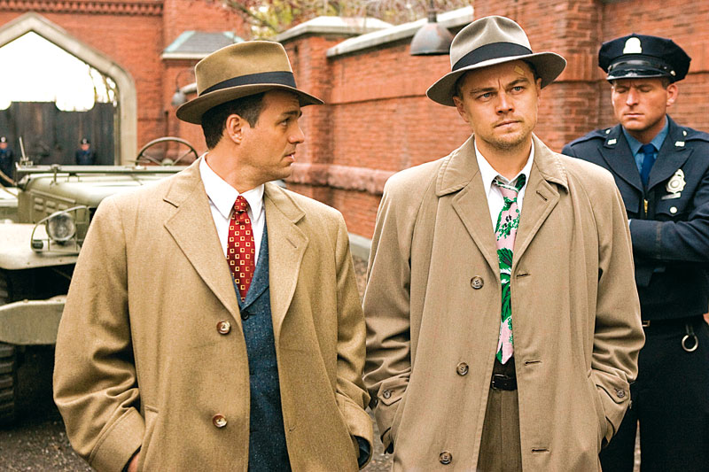

Shutter Island is a 2010 American neo-noir psychological thriller film directed by Martin Scorsese and written by Laeta Kalogridis, based on the 2003 novel of the same name by Dennis Lehane. Leonardo DiCaprio stars as Deputy U.S. Marshal Edward "Teddy" Daniels, who is investigating a psychiatric facility on Shutter Island after one of the patients goes missing. Mark Ruffalo plays his partner and fellow deputy marshal, Ben Kingsley is the facility's lead psychiatrist, Max von Sydow is a German doctor, and Michelle Williams is Daniels' wife. Released on February 19, 2010, the film received mostly positive reviews.